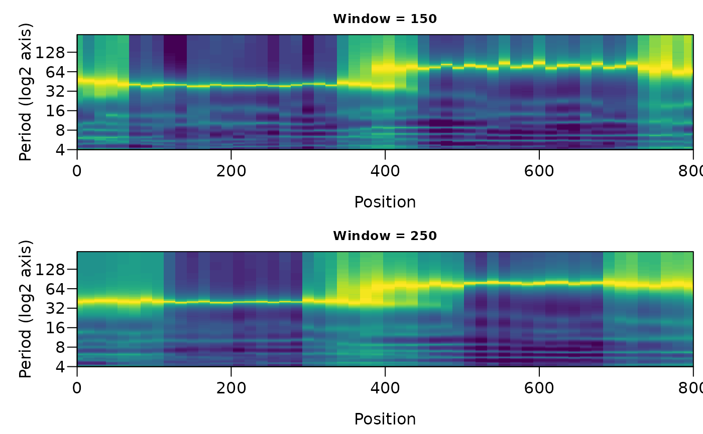

Evolutive maximum entropy spectral analysis (evolutive MESA)
Source:R/mesa_evolutive.R
mesa_evolutive.RdSlides a window along a record and computes a maximum entropy (Burg) spectrum
(mesa_spectrum) in every window position, giving the change of the spectrum with
depth or time. Several window lengths can be given at once, because the best window depends on
the cycle: a short window follows changes in the cycle period closely but resolves long cycles
badly, a long window resolves them but smooths out changes. Near the top and bottom of the
record the window extends beyond the data; this part is padded (see pad), so that the
evolutive spectrum spans the entire record. The spectral peaks of every window position are
extracted and can be followed with track_mesa and plotted with
plot_mesa_evolutive.
Usage
mesa_evolutive(
data = NULL,
window = NULL,
step = NULL,
order = NULL,
order_max = NULL,
criterion = c("fpe", "aic", "mdl", "cat"),
demean = TRUE,
detrend = FALSE,
regularise = TRUE,
pad = c("reflect", "mean", "zero", "none"),
min_cover = 0.5,
nfreq = 512,
fmin = 0,
fmax = NULL,
n_peaks = 8,
min_prominence = 1.5
)Arguments
- data
Record to analyse: a two-column matrix or data frame with depth or time in column 1 and the proxy value in column 2; an unevenly sampled record is interpolated when
regularise = TRUE. Required (Default=NULL).- window
Length of the moving window, in the unit of the first column of
data(numeric, each value at least 8 sampling intervals). A vector gives several window lengths at once, e.g.c(30, 40, 50).NULLuses a fifth of the record length.Default=NULL.- step
Distance between the centres of successive window positions, in the unit of the first column of
data(numeric, > 0).NULLuses a tenth of the shortest window (at least one sampling interval).Default=NULL.- order
AR order used in every window (integer, >= 1).
NULLchooses the order in each window withcriterion; a fixed order gives windows of the same spectral smoothness, which are easier to compare along the record.Default=NULL.- order_max
Largest AR order considered when the order is selected (integer, >= 1);
NULLusesmin(floor(N / 3), 300)for N samples in the window (seemesa_spectrum).Default=NULL.- criterion
Order-selection criterion (character), one of
"fpe"(final prediction error),"aic"(Akaike information criterion),"mdl"(minimum description length) or"cat"(criterion autoregressive transfer); ignored whenorderis given (seemesa_spectrum).Default=c("fpe", "aic", "mdl", "cat"), i.e."fpe".- demean
Remove the mean of the record, and again of every window, before the analysis (logical, TRUE or FALSE).
Default=TRUE.- detrend
Remove a linear trend of the whole record before the analysis instead of only the mean; every window is then demeaned (logical, TRUE or FALSE).
Default=FALSE.- regularise
Linearly interpolate an unevenly sampled record to its median sampling interval (logical, TRUE or FALSE); with
FALSEan unevenly sampled record gives an error.Default=TRUE.- pad
Filling of the part of a window that lies outside the record (character):
"reflect"(mirror the record at its edge),"mean"(the mean of the part of the window inside the record),"zero"(zero, i.e. the mean of the record after demeaning) or"none"(the window is cut at the edge of the record; windows with less thanmin_coverof their length inside the record are left empty).Default=c("reflect", "mean", "zero", "none"), i.e."reflect".- min_cover
Only for
pad = "none": smallest fraction of a window that must lie inside the record for its spectrum to be computed (numeric, between 0 and 1).Default=0.5.- nfreq
Number of frequencies, evenly spaced between
fminandfmax, of every spectrum (integer, > 1).Default=512.- fmin
Lowest frequency of the spectra, in cycles per unit of the first column of
data(numeric, >= 0 and <fmax).Default=0.- fmax
Highest frequency of the spectra, in cycles per unit of the first column of
data(numeric; values above the Nyquist frequency are reduced to it).NULLuses the Nyquist frequency.Default=NULL.- n_peaks
Maximum number of spectral peaks stored per window position, the strongest ones (integer, > 0).
Default=8.- min_prominence
Smallest prominence of a stored peak (numeric, >= 1): the prominence is the peak power divided by the higher of its two neighbouring minima; weaker peaks are not stored.
Default=1.5.
Value
A list of class mesa_evolutive with
- windows
one element per window length with
window,power(matrix, frequencies in rows and window positions in columns),order(AR order of each position) andpeaks(data frame with position, frequency, period, power, relative power and prominence).- frequency
frequencies of the rows.
- position
centres of the windows.
- dt, range
sampling interval and the range of the record.
Details
Powers are not normalised in the object; plot_mesa_evolutive and
track_mesa normalise every window position by its maximum, so that weak and strong
intervals of the record are comparable.
Examples
# a cycle that doubles its period half way
set.seed(2)
t <- seq(0, 800, by = 2)
y <- sin(2 * pi * cumsum(1 / ifelse(t < 400, 40, 80)) * 2) + rnorm(length(t), sd = 0.4)
ev <- mesa_evolutive(data.frame(t, y), window = c(150, 250), order = 20)
plot_mesa_evolutive(ev, vertical = FALSE)
